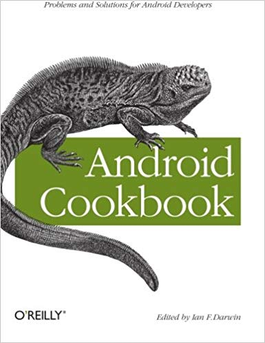
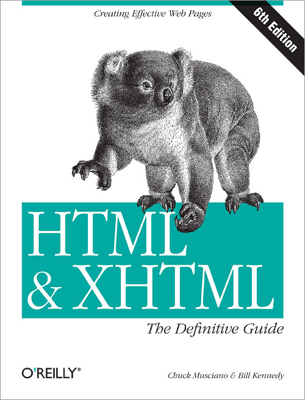

Edward Snowden, el hombre que arriesgó todo para exponer el sistema de vigilancia masiva del gobierno de EE. UU., Revela por primera vez la historia de su vida, incluida la forma en que ayudó a construir ese sistema y lo que lo motivó a intentar derribarlo.
En 2013, Edward Snowden, de veintinueve años, conmocionó al mundo cuando rompió con el establecimiento de inteligencia estadounidense y reveló que el gobierno de los Estados Unidos estaba buscando secretamente los medios para recoger cada llamada telefónica, mensaje de texto y correo electrónico. El resultado sería un sistema de vigilancia masiva sin precedentes con la capacidad de entrometerse en la vida privada de cada persona en la tierra. Seis años más tarde, Snowden revela por primera vez cómo ayudó a construir este sistema y por qué se movió para exponerlo.
Abarcando los bucólicos suburbios de Beltway de su infancia y las publicaciones clandestinas de la CIA y la NSA de su edad adulta, el Registro Permanente es el relato extraordinario de un joven brillante que creció en línea: un hombre que se convirtió en espía, denunciante y, en el exilio, La conciencia de Internet. Escrito con ingenio, gracia, pasión y una franqueza inquebrantable, Registro permanente es una memoria crucial de nuestra era digital y está destinado a ser un clásico.
Using Scalable Vector Graphics (SVG) for illustrations only scratches the surface of this format’s potential on the web. With this practical guide, you’ll learn how to use SVG not only for illustrations but also as graphical documents that you can integrate into complex HTML5 web pages, and style with custom CSS. Web developers will discover ways to adapt designs by adding data based graphics, dynamic styles, interaction, or animation.
Divided into five parts, this book includes:
SVG on the web: Understand how SVG works with HTML, CSS, and JavaScript to define graphics
Drawing with markup: Learn the vector language of x and y coordinates that let SVG create basic and custom shapes
Putting graphics in their place: Use the coordinate system to draw SVG shapes and text at different scales and positions
Artistic touches: Explore how color is used, how strokes are created and manipulated, and how graphical effects like filters, clipping, and masking are applied
SVG as an application: Make your graphic more accessible to humans and computers, and learn how to make it interactive or animated
A Beginner's Guide to HTML, CSS, JavaScript, and Web Graphics
Do you want to build web pages, but have no previous experience? This friendly guide is the perfect place to start. You’ll begin at square one, learning how the Web and web pages work, and then steadily build from there. By the end of the book, you’ll have the skills to create a simple site with multi-column pages that adapt for mobile devices.
Learn how to use the latest techniques, best practices, and current web standards—including HTML5 and CSS3. Each chapter provides exercises to help you to learn various techniques, and short quizzes to make sure you understand key concepts.
This thoroughly revised edition is ideal for students and professionals of all backgrounds and skill levels, whether you’re a beginner or brushing up on existing skills.
Build HTML pages with text, links, images, tables, and forms
Use style sheets (CSS) for colors, backgrounds, formatting text, page layout, and even simple animation effects
Learn about the new HTML5 elements, APIs, and CSS3 properties that are changing what you can do with web pages
Make your pages display well on mobile devices by creating a responsive web design
Learn how JavaScript works—and why the language is so important in web design
Create and optimize web graphics so they’ll download as quickly as possible
Learn how to solve the real problems you face with CSS. This cookbook offers hundreds of practical examples for using CSS to format your web pages, and includes code samples you can use right away. You'll find exactly what you need, from the basics to complex hacks and workarounds.
Each recipe explains how to customize a solution to meet your needs, and each chapter features a sample design that showcases the topics discussed. You'll learn about the behavior of the latest browsers-including IE 8, Firefox 3, Safari 4, and Google Chrome—and how you can resolve differences in the ways they display your web pages. Arranged in a convenient format for quick reference, this third edition is a valuable companion for anyone working with CSS.
Learn the basics, such as the CSS rule structure
Work with web typography and page layout
Create effects for images and other page elements
Learn techniques for configuring lists, forms, and tables
Design effective web navigation and create custom links
Get creative by combining CSS with JavaScript
Learn useful troubleshooting techniques
Explore features of HTML5 and CSS3
Cascading Style Sheets can turn humdrum websites into highly-functional, professional-looking destinations, but many designers merely treat CSS as window-dressing to spruce up their site's appearance. You can tap into the real power of this tool with CSS: The Missing Manual. This second edition combines crystal-clear explanations, real-world examples, and dozens of step-by-step tutorials to show you how to design sites with CSS that work consistently across browsers. Witty and entertaining, this second edition gives you up-to-the-minute pro techniques. You'll learn how to:
Create HTML that's simpler, uses less code, is search-engine friendly, and works well with CSS
Style text by changing fonts, colors, font sizes, and adding borders
Turn simple HTML links into complex and attractive navigation bars -- complete with rollover effects
Create effective photo galleries and special effects, including drop shadows
Get up to speed on CSS 3 properties that work in the latest browser versions
Build complex layouts using CSS, including multi-column designs
Style web pages for printing
With CSS: The Missing Manual, Second Edition, you'll find all-new online tutorial pages, expanded CSS 3 coverage, and broad support for Firebox, Safari, and other major web browsers, including Internet Explorer 8. Learn how to use CSS effectively to build new websites, or refurbish old sites that are due for an upgrade.
Grasp the fundamentals of web application development by building a simple database-backed app from scratch, using HTML, JavaScript, and other open source tools. Through hands-on tutorials, this practical guide shows inexperienced web app developers how to create a user interface, write a server, build client-server communication, and use a cloud-based service to deploy the application.
Each chapter includes practice problems, full examples, and mental models of the development workflow. Ideal for a college-level course, this book helps you get started with web app development by providing you with a solid grounding in the process.
Set up a basic workflow with a text editor, version control system, and web browser
Structure a user interface with HTML, and include styles with CSS
Use JQuery and JavaScript to add interactivity to your application
Link the client to the server with AJAX, JavaScript objects, and JSON
Learn the basics of server-side programming with Node.js
Store data outside your application with Redis and MongoDB
Share your application by uploading it to the cloud with CloudFoundry
Get basic tips for writing maintainable code on both client and server
Build interactive, data-driven websites with the potent combination of open-source technologies and web standards, even if you have only basic HTML knowledge. With this popular hands-on guide, you’ll tackle dynamic web programming with the help of today’s core technologies: PHP, MySQL, JavaScript, jQuery, CSS, and HTML5.
Explore each technology separately, learn how to use them together, and pick up valuable web programming practices along the way. At the end of the book, you’ll put everything together to build a fully functional social networking site, using XAMPP or any development stack you choose.
Learn PHP in-depth, along with the basics of object-oriented programming
Explore MySQL, from database structure to complex queries
Use the MySQLi Extension, PHP’s improved MySQL interface
Create dynamic PHP web pages that tailor themselves to the user
Manage cookies and sessions, and maintain a high level of security
Master the JavaScript language—and enhance it with jQuery
Use Ajax calls for background browser/server communication
Acquire CSS2 and CSS3 skills for professionally styling your web pages
Implement all of the new HTML5 features, including geolocation, audio, video, and the canvas
Build interactive, data-driven websites with the potent combination of open-source technologies and web standards, even if you only have basic HTML knowledge. With this popular hands-on guide, you’ll tackle dynamic web programming with the help of today’s core technologies: PHP, MySQL, JavaScript, CSS, and HTML5.
Explore each technology separately, learn how to use them together, and pick up valuable web programming practices along the way. At the end of the book, you’ll put everything together to build a fully functional social networking site.
Learn PHP in-depth, along with the basics of object-oriented programming
Explore MySQL, from database structure to complex queries
Create dynamic PHP web pages that tailor themselves to the user
Manage cookies and sessions, and maintain a high level of security
Master the JavaScript language and use it to create interactive web pages
Use Ajax calls for background browser/server communication
Acquire CSS2 & CSS3 skills for professionally styling your web pages
Implement all the new HTML5 features, including geolocation, audio, video, and the canvas
Learning PHP, MySQL, JavaScript, and CSS, 2nd Edition
A Step-by-Step Guide to Creating Dynamic Websites
Learn how to build interactive, data-driven websites—even if you don’t have any previous programming experience. If you know how to build static sites with HTML, this popular guide will help you tackle dynamic web programming. You’ll get a thorough grounding in today’s core open source technologies: PHP, MySQL, JavaScript, and CSS.
Explore each technology separately, learn how to combine them, and pick up valuable web programming concepts along the way, including objects, XHTML, cookies, and session management. This book provides review questions in each chapter to help you apply what you’ve learned.
Learn PHP essentials and the basics of object-oriented programming
Master MySQL, from database structure to complex queries
Create web pages with PHP and MySQL by integrating forms and other HTML features
Learn JavaScript fundamentals, from functions and event handling to accessing the Document Object Model
Pick up CSS basics for formatting and styling your web pages
Turn your website into a highly dynamic environment with Ajax calls
Upload and manipulate files and images, validate user input, and secure your applications
Explore a working example that brings all of the ingredients together
JavaScript Essentials for Modern Application Development
This is an exciting time to learn JavaScript. Now that the latest JavaScript specification—ECMAScript 6.0 (ES6)—has been finalized, learning how to develop high-quality applications with this language is easier and more satisfying than ever. This practical book takes programmers (amateurs and pros alike) on a no-nonsense tour of ES6, along with some related tools and techniques.
Author Ethan Brown (Web Development with Node and Express) not only guides you through simple and straightforward topics (variables, control flow, arrays), but also covers complex concepts such as functional and asynchronous programming. You’ll learn how to create powerful and responsive web applications on the client, or with Node.js on the server.
Use ES6 today and transcompile code to portable ES5
Translate data into a format that JavaScript can use
Understand the basic usage and mechanics of JavaScript functions
Explore objects and object-oriented programming
Tackle new concepts such as iterators, generators, and proxies
Grasp the complexities of asynchronous programming
Work with the Document Object Model for browser-based apps
Learn Node.js fundamentals for developing server-side applications
Why reinvent the wheel every time you run into a problem with JavaScript? This cookbook is chock-full of code recipes that address common programming tasks, as well as techniques for building web apps that work in any browser. Just copy and paste the code samples into your project—you’ll get the job done faster and learn more about JavaScript in the process.
You'll also learn how to take advantage of the latest features in ECMAScript 5 and HTML5, including the new cross-domain widget communication technique, HTML5's video and audio elements, and the drawing canvas. You'll find recipes for using these features with JavaScript to build high-quality application interfaces.
Create interactive web and desktop applications
Work with JavaScript objects, such as String, Array, Number, and Math
Use JavaScript with Scalable Vector Graphics (SVG) and the canvas element
Store data in various ways, from the simple to the complex
Program the new HTML5 audio and video elements
Implement concurrent programming with Web Workers
Use and create jQuery plug-ins
Use ARIA and JavaScript to create fully accessible rich internet applications
JavaScript lets you supercharge your HTML with animation, interactivity, and visual effects—but many web designers find the language hard to learn. This easy-to-read guide not only covers JavaScript basics, but also shows you how to save time and effort with the jQuery and jQuery UI libraries of prewritten JavaScript code. You’ll build web pages that feel and act like desktop programs—with little or no programming.
The important stuff you need to know:
Pull back the curtain on JavaScript. Learn how to build a basic program with this language.
Get up to speed on jQuery. Quickly assemble JavaScript programs that work well on multiple web browsers.
Transform your user interface. Learn jQuery UI, the JavaScript library for interface features like design themes and controls.
Make your pages interactive. Create JavaScript events that react to visitor actions.
Use animations and effects. Build drop-down navigation menus, pop-ups, automated slideshows, and more.
Collect data with web forms. Create easy-to-use forms that ensure more accurate visitor responses.
Practice with living examples. Get step-by-step tutorials for web projects you can build yourself.
HTML5 is more than a markup language—it’s a collection of several independent web standards. Fortunately, this expanded guide covers everything you need in one convenient place. With step-by-step tutorials and real-world examples, HTML5: The Missing Manual shows you how to build web apps that include video tools, dynamic graphics, geolocation, offline features, and responsive layouts for mobile devices.
The important stuff you need to know:
Structure web pages more effectively. Learn how HTML5 helps web design tools and search engines work smarter.
Add audio and video without plugins. Build playback pages that work in every browser.
Create stunning visuals with Canvas. Draw shapes, pictures, and text; play animations; and run interactive games.
Jazz up your pages with CSS3. Add fancy fonts and eye-catching effects with transitions and animation.
Design better web forms. Collect information from visitors more efficiently with HTML5 form elements.
Build it once, run it everywhere. Use responsive design to make your site look good on desktops, tablets, and smartphones.
Include rich desktop features. Build self-sufficient web apps that work offline and store the data users need.
With scores of practical recipes you can use in your projects right away, this cookbook helps you gain hands-on experience with HTML5’s versatile collection of elements. You get clear solutions for handling issues with everything from markup semantics, web forms, and audio and video elements to related technologies such as geolocation and rich JavaScript APIs.
Each informative recipe includes sample code and a detailed discussion on why and how the solution works. Perfect for intermediate to advanced web and mobile web developers, this handy book lets you choose the HTML5 features that work for you—and helps you experiment with the rest.
Test browsers for HTML5 support, and use techniques for applying unsupported features
Discover how HTML5 makes web form implementation much simpler
Overcome challenges for implementing native audio and video elements
Learn techniques for using HTML5 with ARIA accessibility guidelines
Explore examples that cover using geolocation data in your applications
Draw images, use transparencies, add gradients and patterns, and more with Canvas
Bring HTML5 features to life with a variety of advanced JavaScript APIs
Flash is fading fast as Canvas continues to climb. The second edition of this popular book gets you started with HTML5 Canvas by showing you how to build interactive multimedia applications. You’ll learn how to draw, render text, manipulate images, and create animation—all in the course of building an interactive web game throughout the book.
Updated for the latest implementations of Canvas and related HTML5 technologies, this edition includes clear and reusable code examples to help you quickly pick up the basics—whether you currently use Flash, Silverlight, or just HTML and JavaScript. Discover why HTML5 is the future of innovative web development.
Create and modify 2D drawings, text, and bitmap images
Use algorithms for math-based movement and physics interactions
Incorporate and manipulate video, and add audio
Build a basic framework for creating a variety of games
Use bitmaps and tile sheets to develop animated game graphics
Go mobile: build web apps and then modify them for iOS devices
Explore ways to use Canvas for 3D and multiplayer game applications
CSS lets you create professional-looking websites, but learning its finer points can be tricky—even for seasoned web developers. This fully updated edition provides the most modern and effective tips, tricks, and tutorial-based instruction on CSS available today. Learn how to use new tools such as Flexbox and Sass to build web pages that look great and run fast on any desktop or mobile device. Ideal for casual and experienced designers alike.
The important stuff you need to know:
Start with the basics. Write CSS-friendly HTML, including the HTML5 tags recognized by today’s browsers.
Design for mobile devices. Create web pages that look great when visitors use them on the go.
Make your pages work for you. Add animations that capture the imagination, and forms that get the job done.
Take control of page layouts. Use professional design techniques such as floats and positioning.
Make your layouts more flexible. Design websites with Flexbox that adjust to different devices and screen sizes.
Work more efficiently. Write less CSS code and work with smaller files, using Syntactically Awesome Stylesheets (Sass).
CSS3 lets you create professional-looking websites, but learning its finer points can be tricky—even for seasoned web developers. This Missing Manual shows you how to take your HTML and CSS skills to the next level, with valuable tips, tricks, and step-by-step instructions. You’ll quickly learn how to build web pages that look great and run fast on devices and screens of all sizes.
The important stuff you need to know:
Start with the basics. Write CSS3-friendly HTML, including the HTML5 tags recognized by today’s browsers.
Apply real-world design. Format text, create navigation tools, and enhance pages with graphics.
Make your pages lively. Create eye-catching animations and give your visitors attractive tables and forms.
Take control of page layouts. Use professional design techniques such as floats and positioning.
Look great on any device. Craft websites that adapt to desktop, tablet, and mobile browsers.
Get advanced techniques. Use CSS3 more effectively and efficiently, and ensure that your web pages look good when printed.

Jump in and build working Android apps with the help of more than 200 tested recipes. With this cookbook, you’ll find solutions for working with the user interfaces, multitouch gestures, location awareness, web services, and device features such as the phone, camera, and accelerometer. You also get useful steps on packaging your app for the Android Market.
Ideal for developers familiar with Java, Android basics, and the Java SE API, this book features recipes contributed by more than three dozen developers from the Android community. Each recipe provides a clear solution and sample code you can use in your project right away. Among numerous topics, this cookbook helps you:
Use guidelines for designing a successful Android app
Work with UI controls, effective layouts, and graphical elements
Learn how to take advantage of Android’s rich features in your app
Save and retrieve application data in files, SD cards, and embedded databases
Access RESTful web services, RSS/Atom feeds, and information from websites
Create location-aware services to find locations and landmarks, and situate them on Google Maps and OpenStreetMap
Test and troubleshoot individual components and your entire application
In this practical guide, CSS expert Lea Verou provides 47 undocumented techniques and tips to help intermediate-to advanced CSS developers devise elegant solutions to a wide range of everyday web design problems.
Rather than focus on design, CSS Secrets shows you how to solve problems with code. You'll learn how to apply Lea's analytical approach to practically every CSS problem you face to attain DRY, maintainable, flexible, lightweight, and standards-compliant results.
Inspired by her popular talks at over 60 international web development conferences, Lea Verou provides a wealth of information for topics including:
Backgrounds and Borders
Shapes
Visual Effects
Typography
User Experience
Structure and Layout
Transitions and Animations

"...lucid, in-depth descriptions of the behavior of every HTML tag on every major browser and platform, plus enough dry humor to make the book a pleasure to read."
--Edward Mendelson, PC Magazine
"When they say 'definitive' they're not kidding."
--Linda Roeder, About.com
Put everthing you need to know about HTML & XHTML at your fingertips. For nearly a decade, hundreds of thousands of web developers have turned to HTML & XHTML: The Definitive Guide to master standards-based web development. Truly a definitive guide, the book combines a unique balance of tutorial material with a comprehensive reference that even the most experienced web professionals keep close at hand. From basic syntax and semantics to guidelines aimed at helping you develop your own distinctive style, this classic is all you need to become fluent in the language of web design.
The new sixth edition guides you through every element of HTML and XHTML in detail, explaining how each element works and how it interacts with other elements. You'll also find detailed discussions of CSS (Cascading Style Sheets), which is intricately related to web page development. The most all-inclusive, up-to-date book on these languages available, this edition covers HTML 4.01, XHTML 1.0, and CSS2, with a preview of the upcoming XHTML2 and CSS3. Other topics include the newer initiatives in XHTML (XForms, XFrames, and modularization) and the essentials of XML for advanced readers. You'll learn how to:
Use style sheets to control your document's appearance
Work with programmatically generated HTML
Create tables, both simple and complex
Use frames to coordinate sets of documents
Design and build interactive forms and dynamic documents
Insert images, sound files, video, Java applets, and JavaScript programs
Create documents that look good on a variety of browsers
The authors apply a natural learning approach that uses straightforward language and plenty of examples. Throughout the book, they offer suggestions for style and composition to help you decide how to best use HTML and XHTML to accomplish a variety of tasks. You'll learn what works and what doesn't, and what makes sense to those who view your web pages and what might be confusing. Written for anyone who wants to learn the language of the Web--from casual users to the full-time design professionals--this is the single most important book on HTML and XHTML you can own.
Bill Kennedy is chief technical officer of MobileRobots, Inc. When not hacking new HTML pages or writing about them, "Dr. Bill" (Ph.D. in biophysics from Loyola University of Chicago) is out promoting the company's line of mobile, autonomous robots that can be used for artificial intelligence, fuzzy logic research, and education.
Chuck Musciano began his career as a compiler writer and crafter of tools at Harris Corporations' Advanced Technology Group and is now a manager of Unix Systems in Harris' Corporate Data Center.
If you don't know about the new features available in HTML5, now's the time to find out. This book provides practical information about how and why the latest version of this markup language will significantly change the way you develop for the Web.
HTML5 is still evolving, yet browsers such as Safari, Mozilla, Opera, and Chrome already support many of its features -- and mobile browsers are even farther ahead. HTML5: Up & Running carefully guides you though the important changes in this version with lots of hands-on examples, including markup, graphics, and screenshots. You'll learn how to use HTML5 markup to add video, offline capabilities, and more -- and you’ll be able to put that functionality to work right away.
Learn new semantic elements, such as ,
Pro REST API
Development
with Node.js
Pro REST API Development with Node.js is your guide to managing and understanding the full
capabilities of successful REST development
This book will provide a brief background on REST and the tools it provides (well known and not so well
known). Understand how there is more to REST than just JSON and URLs. You will then cover and compare
the maintained modules currently available in the npm community, including Express, Restify, Vatican,
and Swagger. Finally you will code an example API from start to finish, using a subset of the tools
covered.
The Node community is currently flooded with modules; some of them are published once and never updated
again - cluttering the entire universe of packages. Pro REST API Development with Node.js shines light
into that black hole of modules for the developers trying to create an API. Understand REST API
development with Node.js using this book today.
This is an unocial free book created for educational purposes and is
not aliated with ocial Node.js group(s) or company(s).
All trademarks and registered trademarks are
the property of their respective owners
If you’re an experienced PHP developer, you already have a head start on learning how to write Node.js
code. In this book, author Daniel Howard demonstrates the remarkable similarities between the two
languages, and shows you how to port your entire PHP web application to Node.js. By comparing specific
PHP features with their Node counterparts, you’ll also discover how to refactor and improve existing PHP
4 or PHP 5 source code.
At the end, you’ll have two fully functional codebases to provide to your users. You can update both of
them simultaneously, using this book as a reference to important aspects of PHP and Node.js.
Use a simple Node.js framework to convert individual PHP pages to Node.js files
Refactor blocking PHP source code to non-blocking Node.js source code that uses callbacks
Convert PHP syntax, variables, and types to Node.js
Use a step-by-step technique for implementing PHP classes and class inheritance in Node.js
Convert PHP file handling APIs into their Node.js equivalents
Compare approaches for using a MySQL database in Node.js and PHP
Convert PHP code for JSON or XML APIs into Node.js code for npm packages
Expert techniques for building fast servers and scalable,
real-time network applications with minimal effort
Node.js is a modern development stack focused on providing an easy way to build scalable network
software. Backed by a growing number of large companies and a rapidly increasing developer base, Node is
revolutionizing the way that software is being built today. Powered by Google?s V8 engine and built out
of C++ modules, this is a JavaScript environment for the enterprise.
Mastering Node.js will take the reader deep into this exciting development environment. Beginning with a
comprehensive breakdown of its innovative non-blocking evented design, Node?s structure is explained in
detail, laying out how its blazingly fast I/O performance simplifies the creation of fast servers,
scalable architectures, and responsive web applications.
Mastering Node.js takes you through a concise yet thorough tour of Node's innovative evented
non-blocking design, showing you how to build professional applications with the help of detailed
examples.
Learn how to integrate your applications with Facebook and Twitter, Amazon and Google, creating social
apps and programs reaching thousands of collaborators on the cloud. See how the Express and Path
frameworks make the creation of professional web applications painless. Set up one, two, or an entire
server cluster with just a few lines of code, ready to scale as soon as you?re ready to launch. Move
data seamlessly between databases and file systems, between clients, and across network protocols, using
a beautifully designed, consistent, and predictable set of tools.
Mastering Node.js contains all of the examples and explanations you?ll need to build applications in a
short amount of time and at a low cost, running on a scale and speed that would have been nearly
impossible just a few years ago.
Learning Node
By Shelley Powers
Publisher: O'Reilly Media
Release Date: October 2012
Pages: 396
Take your web development skills from browser to server with Node—and learn how to write fast, highly
scalable network applications on this JavaScript-based platform. With this hands-on guide, you’ll
quickly master Node’s core fundamentals, gain experience with several built-in and contributed modules,
and learn the differences and parallels between client- and server-side programming.
Get up to speed on Node’s event-driven, asynchronous I/O model for developing data-intensive
applications that are frequently accessed but computationally simple. If you’re comfortable working with
JavaScript, this book provides numerous programming and deployment examples to help you take advantage
of server-side development with Node.
Explore Node’s unique approach to asynchronous development
Build sample Node applications with the Express framework and Connect middleware
Use NoSQL solutions such as Redis and MongoDB—and explore Node’s relational database modules
Work with PDF files, serve HTML5 media, and create graphics with Canvas
Set up bidirectional communication between browser and server with WebSockets
Learn in-depth practices for debugging and testing your applications
Deploy Node applications in the cloud or on your own system
"Learning Node will make it easy for someone from any programming background to get a grip on Node.js
and build amazing projects."
Node: Up and Running
Scalable Server-Side Code with JavaScript
By Tom Hughes-Croucher, Mike Wilson
Publisher: O'Reilly Media
Release Date: April 2012
Pages: 204
This book introduces you to Node, the new web development framework written in JavaScript. You'll learn
hands-on how Node makes life easier for experienced JavaScript developers: not only can you work on the
front end and back end in the same language, you'll also have more flexibility in choosing how to divide
application logic between client and server.
Written by a core contributor to the framework, Node: Up and Running shows you how Node scales up to
support large numbers of simultaneous connections across multiple servers, and scales down to let you
create quick one-off applications with minimal infrastructure. Built on the V8 JavaScript engine that
runs Google Chrome, Node is already winning the hearts and minds of many companies, including Google and
Yahoo! This book shows you why.
Understand Node's event-loop architecture, non-blocking I/O, and event-driven programming
Discover how Node supports a variety of database and data storage tools
Learn best practices for writing easy-to-maintain code for Node
Get concrete examples of how to use the various Node APIs in practice
Take advantage of the book’s complete API reference
 Edward Snowden, el hombre que arriesgó todo para exponer el sistema de vigilancia masiva del gobierno de EE. UU., Revela por primera vez la historia de su vida, incluida la forma en que ayudó a construir ese sistema y lo que lo motivó a intentar derribarlo.
En 2013, Edward Snowden, de veintinueve años, conmocionó al mundo cuando rompió con el establecimiento de inteligencia estadounidense y reveló que el gobierno de los Estados Unidos estaba buscando secretamente los medios para recoger cada llamada telefónica, mensaje de texto y correo electrónico. El resultado sería un sistema de vigilancia masiva sin precedentes con la capacidad de entrometerse en la vida privada de cada persona en la tierra. Seis años más tarde, Snowden revela por primera vez cómo ayudó a construir este sistema y por qué se movió para exponerlo.
Abarcando los bucólicos suburbios de Beltway de su infancia y las publicaciones clandestinas de la CIA y la NSA de su edad adulta, el Registro Permanente es el relato extraordinario de un joven brillante que creció en línea: un hombre que se convirtió en espía, denunciante y, en el exilio, La conciencia de Internet. Escrito con ingenio, gracia, pasión y una franqueza inquebrantable, Registro permanente es una memoria crucial de nuestra era digital y está destinado a ser un clásico.
Edward Snowden, el hombre que arriesgó todo para exponer el sistema de vigilancia masiva del gobierno de EE. UU., Revela por primera vez la historia de su vida, incluida la forma en que ayudó a construir ese sistema y lo que lo motivó a intentar derribarlo.
En 2013, Edward Snowden, de veintinueve años, conmocionó al mundo cuando rompió con el establecimiento de inteligencia estadounidense y reveló que el gobierno de los Estados Unidos estaba buscando secretamente los medios para recoger cada llamada telefónica, mensaje de texto y correo electrónico. El resultado sería un sistema de vigilancia masiva sin precedentes con la capacidad de entrometerse en la vida privada de cada persona en la tierra. Seis años más tarde, Snowden revela por primera vez cómo ayudó a construir este sistema y por qué se movió para exponerlo.
Abarcando los bucólicos suburbios de Beltway de su infancia y las publicaciones clandestinas de la CIA y la NSA de su edad adulta, el Registro Permanente es el relato extraordinario de un joven brillante que creció en línea: un hombre que se convirtió en espía, denunciante y, en el exilio, La conciencia de Internet. Escrito con ingenio, gracia, pasión y una franqueza inquebrantable, Registro permanente es una memoria crucial de nuestra era digital y está destinado a ser un clásico.
.jpg)
.jpg)
.jpg)
.jpg)
.jpg)
.jpg)
.jpg)
.jpg)
.jpg)
.jpg)
.jpg)
.jpg)
.jpg)
.jpg)
.jpg)
.jpg)
.jpg)